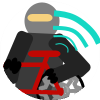

Problem
Many people use bike as transportation, which is supported by the Norwegian transportation authorities and organisations. In 2012 they prepared a proposal for improving and developing a healthy Norwegian transport plan, in order to achieve the climate targets set.2 The proposal states the necessity to reduce emissions from vehicles, ships and aircraft.
"(...) increased cycling and walking gives better accessibility, health and environment"
However, there are several challenges associated with bicycle as transportation: every third person in Norway has experienced bike theft.14 The police reported 4837 thefts of bicycles in 2015, only in Oslo.8 In addition, probably most of the bike thefts are never reported. These numbers and facts might lower the chances for people to choose bike as transportation.
There are a number of good advices for how to prevent or minimize the risk of getting your bike stolen, such as1, 4, 7, 13;
- Lock the frame and both front and rear wheels to a rack.
- Only use locks approved by insurance companies.
- Engrave the frame number of the bike on several parts of the bike.
- Remove the saddle when you leave the bike.
- Register the bike in an official bike registry.
- Replace with lockable nuts and bolts on wheels, gears, seat and brakes.
Several of the measures above are easy to implement, while others are more time-consuming or difficult to fulfill. For example, no one in our project team has engraved the frame number on different parts of our bicycles or switched to lockable nuts and bolts. The list of advices for theft prevention is long and good, but one can question whether they actually are adequate or simple enough to be conducted.
In addition we have checked for existing products on the market, to see if any of these might be usable. We found a lot of different products, but it was difficult to see how they could prevent or solve the problem with thefts of bicycles.
Only 1,6 % of the bike thefts in Oslo in 2011 were solved, which means the majority of the owners did not got their bike back. The negative numbers have continued and the rate of thefts who were solved in 2015 was only 1 %. We wondered why there is no solution to the problem.
The police admit that "thefts of bicycles are not a priority".10, 13
Our background material indicates a need to facilitate bike as means of transport, and as a valuable factor for both health and environment. Further, we need to overcome the widespread challenge of bike thefts. Therefore we have designed a safe and smart lock, which is easy to use and makes the bike less attractive for theft. In addition, if the worst is to happen and a bike has been stolen, our product will help the owners to recover their bikes.